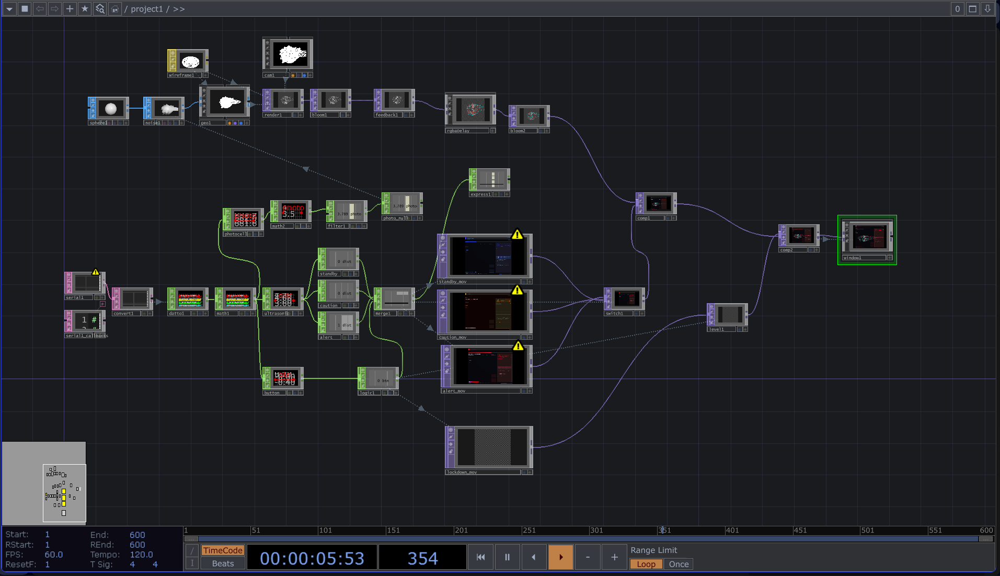
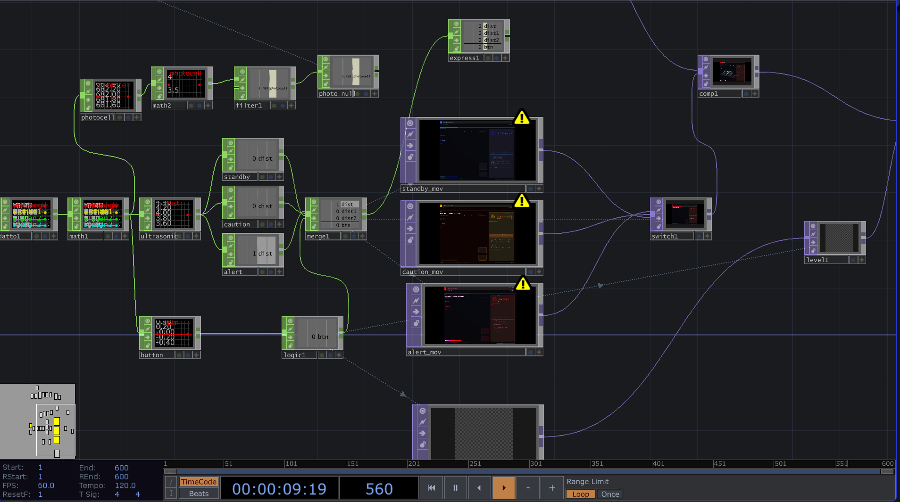
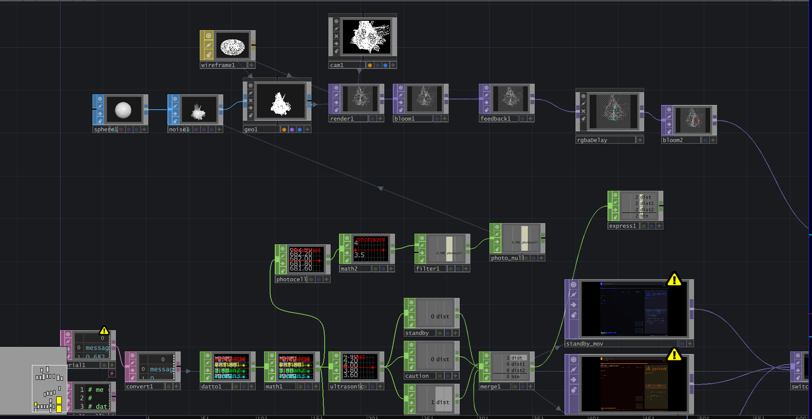

Overview
This project is an interactive display that changes depending on the user’s distance from the unit. The hardware has a button (set to pin2) that triggers a lockdown mode when pressed. It also latches, which means that lockdown will stay on until the timer is up. The ultrasonic sensor is on pins 7 and 6. It reads the distance to monitor the panel’s state.
The LDR/Photocell was supposed to act like a fake fingerprint scanner, but I ditched that in favor of having its reading be converted into a visual graph that fluctuates based on the ambient light.
My LEDs consist of red on pin 9, alternating between solid and flashing depending on the state. Yellow is on pin 10, and is the caution state. Blue is on pin 11, and indicates a stable state. The buzzer is on pin 5; it starts buzzing on caution, gets faster on alert, and goes crazy in lockdown.
I made the actual panels in after effects, exported the four files as MOV + png sequences, and composited everything in Touchdesigner, which is also where I made the switches for each state correspond to the bounds of the arduino.
System Logic
I used millis timers so that everything could run at the same time. The blue LED fades in and out on standby. The yellow LED fades slightly faster in caution, and the red LED is solid on alert and flashes rapidly on lockdown. The state is determined by the ultrasonic sensor:
- > 35 cm = standby (blue)
- 20–35 cm = caution (yellow fade, slow buzzer)
- <= 20 cm = red solid, buzzer faster
When the button is pressed, a lockdown overlay plays, the red led starts flashing, and the buzzer also gets much louder and faster. The lockdown takes priority amongst the other states.
TouchDesigner Integration
TouchDesigner handles the signal processing pipeline, smoothing sensor input and generating visual logic states. Below are documentation snapshots of the node network.


